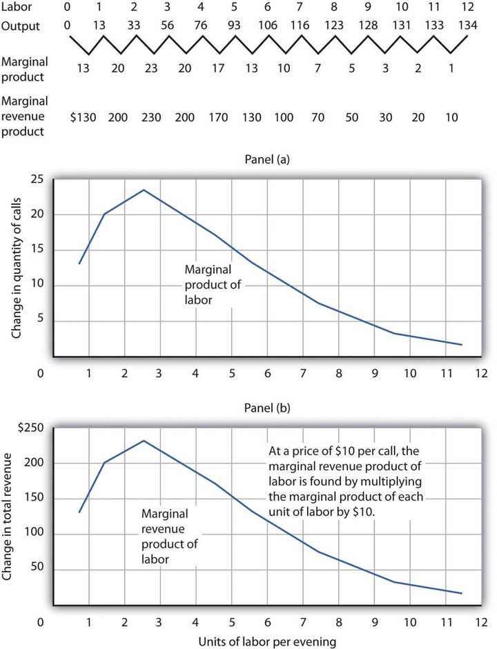
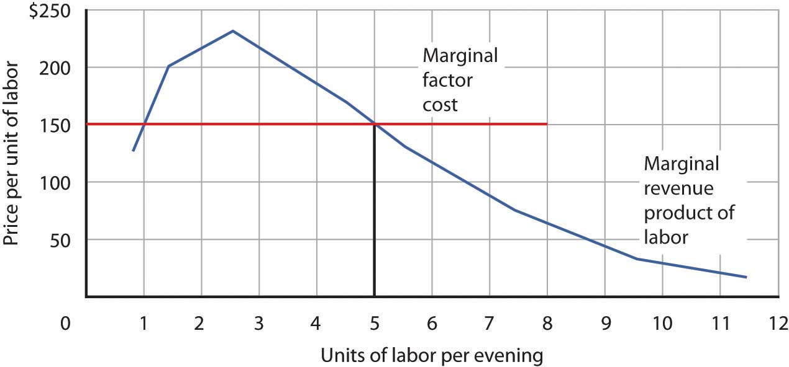

A firm must have labor to produce goods and services. But how much labor will the firm employ? A profit-maximizing firm will base its decision to hire additional units of labor on the marginal decision rule: If the extra output that is produced by hiring one more unit of labor adds more to total revenue than it adds to total cost, the firm will increase profit by increasing its use of labor. It will continue to hire more and more labor up to the point that the extra revenue generated by the additional labor no longer exceeds the extra cost of the labor.
For example, if a computer software company could increase its annual total revenue by $50,000 by hiring a programmer at a cost of $49,000 per year, the marginal decision rule says that it should do so. Since the programmer will add $49,000 to total cost and $50,000 to total revenue, hiring the programmer will increase the company’s profit by $1,000. If still another programmer would increase annual total revenue by $48,000 but would also add $49,000 to the firm’s total cost, that programmer should not be hired because he or she would add less to total revenue than to total cost and would reduce profit.
The amount that an additional unit of a factor adds to a firm’s total revenue during a period is called the marginal revenue product (MRP)The amount that an additional unit of a factor adds to a firm’s total revenue during a period. of the factor. An additional unit of a factor of production adds to a firm’s revenue in a two-step process: first, it increases the firm’s output. Second, the increased output increases the firm’s total revenue. We find marginal revenue product by multiplying the marginal product (MP) of the factor by the marginal revenue (MR).
Equation 12.1
In a perfectly competitive market the marginal revenue a firm receives equals the market-determined price P. Therefore, for firms in perfect competition, we can express marginal revenue product as follows:
Equation 12.2
The marginal revenue product of labor (MRPL) is the marginal product of labor (MPL) times the marginal revenue (which is the same as price under perfect competition) the firm obtains from additional units of output that result from hiring the additional unit of labor. If an additional worker adds 4 units of output per day to a firm’s production, and if each of those 4 units sells for $20, then the worker’s marginal revenue product is $80 per day. With perfect competition, the marginal revenue product for labor, MRPL, equals the marginal product of labor, MPL, times the price, P, of the good or service the labor produces:
Equation 12.3
The law of diminishing marginal returns tells us that if the quantity of a factor is increased while other inputs are held constant, its marginal product will eventually decline. If marginal product is falling, marginal revenue product must be falling as well.
Suppose that an accountant, Stephanie Lancaster, has started an evening call-in tax advisory service. Between the hours of 7 p.m. and 10 p.m., customers can call and get advice on their income taxes. Ms. Lancaster’s firm, TeleTax, is one of several firms offering similar advice; the going market price is $10 per call. Ms. Lancaster’s business has expanded, so she hires other accountants to handle the calls. She must determine how many accountants to hire.
As Ms. Lancaster adds accountants, her service can take more calls. The table in Figure 12.3 "Marginal Product and Marginal Revenue Product" gives the relationship between the number of accountants available to answer calls each evening and the number of calls TeleTax handles. Panel (a) shows the increase in the number of calls handled by each additional accountant—that accountant’s marginal product. The first accountant can handle 13 calls per evening. Adding a second accountant increases the number of calls handled by 20. With two accountants, a degree of specialization is possible if each accountant takes calls dealing with questions about which he or she has particular expertise. Hiring the third accountant increases TeleTax’s output per evening by 23 calls.
Suppose the accountants share a fixed facility for screening and routing calls. They also share a stock of reference materials to use in answering calls. As more accountants are added, the firm will begin to experience diminishing marginal returns. The fourth accountant increases output by 20 calls. The marginal product of additional accountants continues to decline after that. The marginal product curve shown in Panel (a) of Figure 12.3 "Marginal Product and Marginal Revenue Product" thus rises and then falls.
Each call TeleTax handles increases the firm’s revenues by $10. To obtain marginal revenue product, we multiply the marginal product of each accountant by $10; the marginal revenue product curve is shown in Panel (b) of Figure 12.3 "Marginal Product and Marginal Revenue Product".
Figure 12.3 Marginal Product and Marginal Revenue Product
The table gives the relationship between the number of accountants employed by TeleTax each evening and the total number of calls handled. From these values we derive the marginal product and marginal revenue product curves.
We can use Ms. Lancaster’s marginal revenue product curve to determine the quantity of labor she will hire. Suppose accountants in her area are available to offer tax advice for a nightly fee of $150. Each additional accountant Ms. Lancaster hires thus adds $150 per night to her total cost. The amount a factor adds to a firm’s total cost per period is called its marginal factor cost (MFC)The amount that an additional unit of a factor adds to a firm’s total cost per period.. Marginal factor cost (MFC) is the change in total cost (ΔTC) divided by the change in the quantity of the factor (Δf):
Equation 12.4
The marginal factor cost to TeleTax of additional accountants ($150 per night) is shown as a horizontal line in Figure 12.4 "Marginal Revenue Product and Demand". It is simply the market wage (i.e., the price per unit of labor).
Figure 12.4 Marginal Revenue Product and Demand
The downward-sloping portion of a firm’s marginal revenue product curve is its demand curve for a variable factor. At a marginal factor cost of $150, TeleTax hires the services of five accountants.
TeleTax will maximize profit by hiring additional units of labor up to the point where the downward-sloping portion of the marginal revenue product curve intersects the marginal factor cost curve; we see in Figure 12.4 "Marginal Revenue Product and Demand" that it will hire five accountants. Based on the information given in the table in Figure 12.3 "Marginal Product and Marginal Revenue Product", we know that the five accountants will handle a total of 93 calls per evening; TeleTax will earn total revenue of $930 per evening. The firm pays $750 for the services of the five accountants—that leaves $180 to apply to the fixed cost associated with the tax advice service and the implicit cost of Stephanie Lancaster’s effort in organizing the service. Recall that these implicit costs include the income forgone (that is, opportunity cost) by not shifting her resources, including her own labor, to her next best alternative.
If TeleTax had to pay a higher price for accountants, it would face a higher marginal factor cost curve and would hire fewer accountants. If the price were lower, TeleTax would hire more accountants. The downward-sloping portion of TeleTax’s marginal revenue product curve shows the number of accountants it will hire at each price for accountants; it is thus the firm’s demand curve for accountants. It is the portion of the curve that exhibits diminishing returns, and a firm will always seek to operate in the range of diminishing returns to the factors it uses.
It may seem counterintuitive that firms do not operate in the range of increasing returns, which would correspond to the upward-sloping portion of the marginal revenue product curve. However, to do so would forgo profit-enhancing opportunities. For example, in Figure 12.4 "Marginal Revenue Product and Demand", adding the second accountant adds $200 to revenue but only $150 to cost, so hiring that accountant clearly adds to profit. But why stop there? What about hiring a third accountant? That additional hire adds even more to revenue ($230) than to cost. In the region of increasing returns, marginal revenue product rises. With marginal factor cost constant, not to continue onto the downward-sloping part of the marginal revenue curve would be to miss out on profit-enhancing opportunities. The firm continues adding accountants until doing so no longer adds more to revenue than to cost, and that necessarily occurs where the marginal revenue product curve slopes downward.
In general, then, we can interpret the downward-sloping portion of a firm’s marginal revenue product curve for a factor as its demand curve for that factor.Strictly speaking, it is only that part of the downward-sloping portion over which variable costs are at least covered. This is the flip-side of what you learned about a firm’s supply curve in the chapter on competitive output markets: Only the portion of the rising marginal cost curve that lies above the minimum point of the average variable cost curve constitutes the supply curve of a perfectly competitive firm. We find the market demand for labor by adding the demand curves for individual firms.
The Two Rules Lead to the Same Outcome
In the chapter on competitive output markets we learned that profit-maximizing firms will increase output so long as doing so adds more to revenue than to cost, or up to the point where marginal revenue, which in perfect competition is the same as the market-determined price, equals marginal cost. In this chapter we have learned that profit-maximizing firms will hire labor up to the point where marginal revenue product equals marginal factor cost. Is it possible that a firm that follows the marginal decision rule for hiring labor would end up producing a different quantity of output compared to the quantity of output it would choose if it followed the marginal decision rule for deciding directly how much output to produce? Is there a conflict between these two marginal decision rules?
The answer is no. These two marginal decision rules are really just two ways of saying the same thing: one rule is in terms of quantity of output and the other in terms of the quantity of factors required to produce that quantity of output. Hiring an additional unit of a factor means producing a certain amount of additional output.
Using the example of TeleTax, at $150 per accountant per night, we found that Ms. Lancaster maximizes profit by hiring five accountants. The MPL of the fifth accountant is ΔQ; it is 17. At five accountants, the marginal cost of a call is ΔTC/ΔQ = $150/17 = $8.82, which is less than the price of $10 per call, so hiring that accountant adds to her profit. At six accountants, the marginal cost of a call would be $150/13 = $11.54, which is greater than the $10 price, so hiring a sixth accountant would lower profit. The profit-maximizing output of 93 calls, found by comparing marginal cost and price, is thus consistent with the profit-maximizing quantity of labor of five accountants, found by comparing marginal revenue product and marginal factor cost.
The fact that a firm’s demand curve for labor is given by the downward-sloping portion of its marginal revenue product of labor curve provides a guide to the factors that will shift the curve. In perfect competition, marginal revenue product equals the marginal product of labor times the price of the good that the labor is involved in producing; anything that changes either of those two variables will shift the curve. The marginal revenue product of labor will change when there is a change in the quantities of other factors employed. It will also change as a result of a change in technology, a change in the price of the good being produced, or a change in the number of firms hiring the labor.
As a firm changes the quantities of different factors of production it uses, the marginal product of labor may change. Having more reference manuals, for example, is likely to make additional accountants more productive—it will increase their marginal product. That increase in their marginal product would increase the demand for accountants. When an increase in the use of one factor of production increases the demand for another, the two factors are complementary factors of productionFactors of production for which an increase in the use of one increases the demand for the other..
One important complement of labor is human capital, the set of skills and abilities workers bring to the production of goods and services. When workers gain additional human capital, their marginal product rises. The demand for them by firms thus increases. This is perhaps one reason why you have decided to pursue a college education.
Other inputs may be regarded as substitutes for each other. A robot, for example, may substitute for some kinds of assembly-line labor. Two factors are substitute factors of productionFactors of production for which an increase in the use of one decreases the demand for the other. if the increased use of one lowers the demand for the other.
Technological changes can increase the demand for some workers and reduce the demand for others. The production of a more powerful computer chip, for example, may increase the demand for software engineers. It may also allow other production processes to be computerized and thus reduce the demand for workers who had been employed in those processes.
Technological changes have significantly increased the economy’s output over the past century. The application of sophisticated technologies to production processes has boosted the marginal products of workers who have the skills these technologies require. That has increased the demand for skilled workers. The same technologies have been a substitute for less-skilled workers, and the demand for those workers has fallen. As the Case in Point on the impact of computer technology implies, envisioning the impact of technological change on demand for different kinds of labor may be something to keep in mind as you consider educational options. As you consider your major, for example, you should keep in mind that some occupations may benefit from technological changes; others may not.
A change in demand for a final product changes its price, at least in the short run. An increase in the demand for a product increases its price and increases the demand for factors that produce the product. A reduction in demand for a product reduces its price and reduces the demand for the factors used in producing it. Because the demand for factors that produce a product depends on the demand for the product itself, factor demand is said to be derived demandRefers to the idea that demand for factors of production depends on the demand for the products that use the factors of production.. That is, factor demand is derived from the demand for the product that uses the factor in its production.
Suppose, for example, that the demand for airplanes increases. The price and quantity of airplanes available will go up. A higher price for airplanes increases the marginal revenue product of labor of airplane-assembly workers and thus increases the demand for these workers.
Just as increases in the demand for particular goods or services increase the demand for the workers that produce them, so reductions in demand for particular goods or services will reduce the demand for the workers that produce them. An example is the relationship between the demand for train travel and the demand for conductors. Over the years, the fall in demand for train travel has reduced the demand for railroad conductors.
We can determine the demand curve for any factor by adding the demand for that factor by each of the firms using it. If more firms employ the factor, the demand curve shifts to the right. A reduction in the number of firms shifts the demand curve to the left. For example, if the number of restaurants in an area increases, the demand for waiters and waitresses in the area goes up. We expect to see local wages for these workers rise as a result.
How would each of the following affect the demand for labor by the accounting advice service, TeleTax, described in this chapter?
“…[M]oving an object, performing a calculation, communicating a piece of information or resolving a discrepancy…[W]hich of these tasks can be performed by a computer?” ask economists David H. Autor, Frank Levy, and Richard J. Murname.
In general, computers are good at performing routine tasks and substitute for labor that had performed such tasks in the past. Conversely, computers are complements for workers performing nonroutine tasks, i.e., tasks that require such attributes as creativity, flexibility, and problem-solving. As the price of computers has fallen in recent decades, the demand for labor performing nonroutine tasks, usually college-educated workers, has grown, while the demand for labor performing routine tasks has fallen. The chart below illustrates how computerization likely affects demand for different kinds of labor.
In studying the impact of computerization on labor demand, the study’s authors have also noted that changes in the nature of certain tasks (“task-shifting”) stemming from computerization have markedly changed what an occupation encompasses.
For example, the Department of Labor’s Occupation Outlook Handbook in 1976 described what secretaries do as: “Secretaries relieve their employers of routine duties so they can work on more important matters. Although most secretaries type, take shorthand, and deal with callers, the time spent on these duties varies in different types of organizations.” In contrast, the 2000 edition of the Handbook describes the work of secretaries quite differently: “As technology continues to expand in offices across the Nation, the role of the secretary has greatly evolved. Office automation and organizational restructuring have led secretaries to assume a wide range of new responsibilities once reserved for managerial and professional staff. Many secretaries now provide training and orientation to new staff, conduct research on the Internet, and learn to operate new office technologies.” The authors find that this task-shifting within occupations, away from routine tasks and towards nonroutine tasks, is pervasive.
Source: David H. Autor, Frank Levy, and Richard J. Murname, “The Skill Content of Recent Technological Change: An Empirical Exploration,” Quarterly Journal of Economics, 118: 4 (November 2003): 1279–1333.